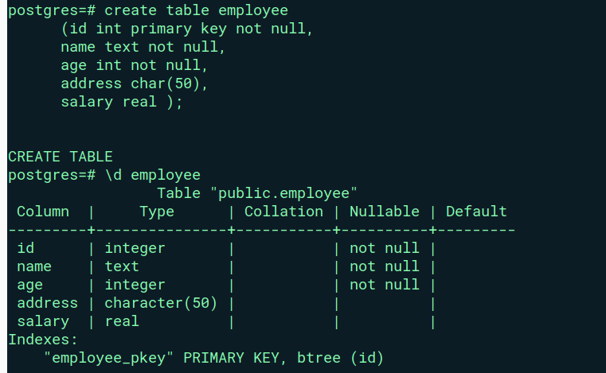

Getting started with SQL :
Data definition language (DDL):
1) Create Table statement:
A relational database consists of multiple related tables. A table consists of rows and columns. Tables allow you to store structured data like customers, products, employees, etc.
To describe a table you may use command like d table_name
To create a new table, you use the CREATE TABLE statement. The following illustrates the basic syntax of the CREATE TABLE statement:
create table employee (id int primary key not null, name text not null, age int not null, address char(50), salary real );
Alter Table Statement
ALTER TABLE changes the definition of an existing table.
The following illustrates the basic syntax of the ALTER TABLE statement: ALTER TABLE table_name action;
PostgreSQL provides you with many actions:
Add a column
Drop a column
Change the data type of a column
Rename a column
Add a constraint to a column.
Rename a table
Example:-
In this example we have added a column name age in to employee table.
$ alter table employee add column age int;
postgres=# alter table employee add column pincode int; ALTER TABLE postgres=# select * from employee ; id | name | age | address | salary | pincode ----+------+-----+---------+--------+--------- (0 rows)
Data Manupulation Language- Insert (DML):
The PostgreSQL INSERT statement allows you to insert a new row into a table.
- The following illustrates the most basic syntax of the INSERT statement:
INSERT INTO table_name(column1, column2, …) VALUES (value1, value2, …);
In this syntax:
specify the name of the table (table_name) that you want to insert data after the INSERT INTO keywords and a list of comma-separated columns (colum1, column2, ….).
supply a list of comma-separated values in a parentheses (value1, value2, …) after the VALUES keyword. The columns and values in the column and value lists must be in the same order.
Example:-
postgres=#insert into employee (id,name,age,address,salary)values (10,’smith’,30,’Babglore’,50000);
postgres=# insert into employee (id,name,age,address,salary)values (10,'smith',30,'Babglore',50000); INSERT 0 1
DML-Update:
UPDATE changes the values of the specified columns in all rows that satisfy the condition. Only the columns to be modified need be mentioned in the SET clause; columns not explicitly modified retain their previous values.
The following illustrates the syntax of the UPDATE statement:
UPDATE table_name SET column1 = value1, column2 = value2, … WHERE condition;
DML -Update:
Example:-
In this example we have updated salary to 10000 where id no. is 2
testdb=# update employee1 set salary = 10000 where id=2;
DML -Delete:
The PostgreSQL DELETE statement allows you to delete one or more rows from a table.
The following shows basic syntax of the DELETE statement:
DELETE FROM table_name WHERE condition;
In this syntax:
First, specify the name of the table from which you want to delete data after the DELETE FROM keywords.
Second, use a condition in the WHERE clause to specify which rows from the table to delete.
Note that the DELETE statement only removes data from a table. It doesn’t modify the structure of the table.
Example:-
In this example we have deleted a record where id was 6.
test=#delete from employee1 where id=6;
Data control language (DCL):
Transaction control language (TCL):
TCL begin:
In TCL transaction start with ‘begin’ then we perform tasks.
testdb=# begin ; BEGIN testdb=# SELECT * FROM emp;
Here we will insert a new recod in to the table
testdb=# insert into emp (name,gender,age) values (‘Rahul’,’M’,27); testdb=# SELECT * FROM emp;
TCL Savepoint:
SAVEPOINT is a boundary defined within a transaction that allows for a partial rollback.
It gives the user the ability to roll the transaction back to a certain point without rolling back the entire transaction.
testdb=# savepoint my_savepoint;
TCL Rollback and commit:
ROLLBACK:-
As the name suggests, ROLLBACK undoes the changes that were issued in the transaction block before it.
Example:-
testdb=# insert into emp (name,gender,age) values (‘Rohit’,’M’,26); INSERT 0 1
testdb=# SELECT * FROM emp;
Now use rollback to mu_savepoint it will delete the unsaved row from table.
testdb=# rollback to my_savepoint;
ROLLBACK
Commit:-
the COMMIT keyword saves changes to the database.
testdb=# commit; COMMIT
testdb=# SELECT * FROM emp;
sequence:
CREATE SEQUENCE creates a new sequence number generator. This involves creating and initializing a new special single-row table with the name. The generator will be owned by the user issuing the command.
Sequence/ Serial Function..
nextval() - Advance sequence and return new value
currval() - Most recently used value for specific sequence
setval() - Set next returned value for a sequence
Ex.
testdb=#INSERT INTO student VALUES (nextval(‘demo_seqn’), ‘saurabh’); INSERTO I
Sequences are used to generate unique values for insertion of new records.
Insert some values into the table:-
testdb=# create table emp1 (id int,name varchar(20),age int,city varchar(20)); CREATE TABLE
testdb=# insert into emp1 values (nextval(‘test_id’),’Kishor’,24,’pune’); INSERT 0 1
testdb=# insert into emp1 values (nextval(‘test_id’),’Rohit’,25,’pune’); INSERT 0 1
testdb=# insert into emp1 values (nextval(‘test_id’),’Nilesh’,25,’pune’); INSERT 0 1